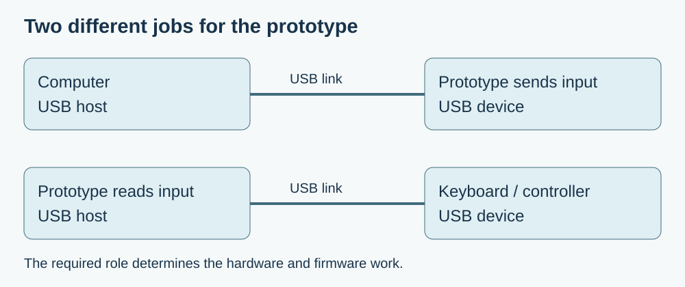

You want to use an existing keyboard, control surface or game controller as the input to a new hardware product. It already works when plugged into a laptop, and your development board has a USB connector. The missing question is which part of the new setup will do the laptop's job as the USB host.
That question comes before choosing a cable or drawing the enclosure opening. A board that presents itself to a computer as a keyboard is performing a different role from a board that reads a connected keyboard. An adapter can change the connector arrangement, but it does not supply the missing host firmware or establish a suitable power circuit.
The distinction matters outside hobby examples. In a July 12, 2026 discussion on AskElectronics, adeptyism was developing an analogue audio mixer controlled by an external USB MIDI mixer. The author understood the analogue portion but needed help choosing the digital platform and host capability. That is a concrete product-integration question, not evidence that any one suggested board was subsequently built or validated.

Start with the role your product needs
A USB system consists of a host with connected functions, optionally reached through hubs. The host initiates the ordinary transfers and identifies and configures a newly attached device. A keyboard supplies its reports through that managed connection; two ordinary device-only implementations do not become a working pair merely because their connectors can be adapted.
Write the intended interaction in one sentence: “A USB MIDI controller changes settings in our standalone instrument,” or “A USB keyboard supplies input to our exhibit.” In those examples, the prototype must provide the host side and understand the peripheral's interface. If the product instead sends keystrokes to a laptop, the laptop remains the host and the prototype acts as a device.
A Chinese-language GP2040-CE keyboard-host guide makes this distinction explicitly: receiving input from a keyboard is a different configuration from making the controller output keyboard signals. Its host feature also requires the appropriate host-port hardware. This is a useful project-specific illustration of the distinction, not a universal compatibility guarantee for every keyboard.
Look for a complete host implementation
The RP2040's native USB controller supports host or device operation; its datasheet, section 4.1.2, describes how those roles share controller components. That chip capability is only one part of the decision. Check the board's connector and power arrangement, then the software stack and the class driver needed by the attached product. Firmware that currently exposes a serial port to a PC has not, by that fact, demonstrated USB host operation.
If the prototype must read a peripheral while also appearing as a USB device to a computer, state that simultaneous requirement before selecting hardware. One implementation is an additional PIO-based USB port. The Adafruit Feather RP2040 USB Host guide describes that approach, retaining the native port and adding peripheral power circuitry. It also identifies processor and PIO resources used by its software arrangement. Those resources must fit alongside the rest of the product.
The firmware needs to support the actual function, not just detect that something was plugged in. For example, TinyUSB's host-class documentation separates class support, interface capacity, hub support and device readiness. A physical product can expose several interfaces, and a build configured for one simple peripheral need not handle every combination. Record the selected stack version and configuration with the board choice.
Test the exact peripheral before promising compatibility
Begin with the specific controller the customer intends to use. Record its model and firmware, whether it needs a hub, how it is powered, and which controls the application must receive. A musical controller may expose interfaces or messages that a minimal demonstration never exercises. The first useful result is a repeatable product interaction, not simply a USB connection message.
Recent experience also shows why reconnection deserves a separate check. In a September 20–22, 2026 GL.iNet forum report, StefanR described a firmware-update-related enumeration failure involving an RP2040-based AmigaHID adapter. The user reported a workaround, while the vendor continued examining reconnect logic. The visible discussion did not establish a final released fix. It illustrates a version-specific compatibility problem; it is not a reason to apply that workaround to unrelated products.
For your prototype, compare power-up with the peripheral already attached, connection after startup, and unplugging and reconnecting during use. Confirm that the application returns to a usable state and does not continue acting on stale input. If a hub is part of the intended setup, include that exact arrangement rather than assuming a direct-connection test covers it.
Make the first commitment narrow and useful
For an early instrument or installation, supporting one documented controller can be a sensible first scope. Expand the compatibility list only after testing the additional devices and the functions people need. A promise to accept arbitrary USB peripherals is a much larger firmware and validation task than reading one known keyboard or MIDI control surface.
Give the enclosure and electronics work the same concrete requirement. Identify which connector accepts the peripheral, how the peripheral receives power, and whether the prototype also connects to a computer. That prevents a mechanically convenient socket from becoming an unresolved interface decision late in the build.
If your product idea depends on an existing USB controller, discuss the integration with Anvol. Bring the controller model, the intended interaction and a sketch of the connections. Those details help define a prototype test that can establish the required behaviour before the team commits to the final arrangement.
The diagram explains a design choice; it is not a record of a built host interface. No hardware compatibility test was performed for this article. Sources checked October 10, 2026.